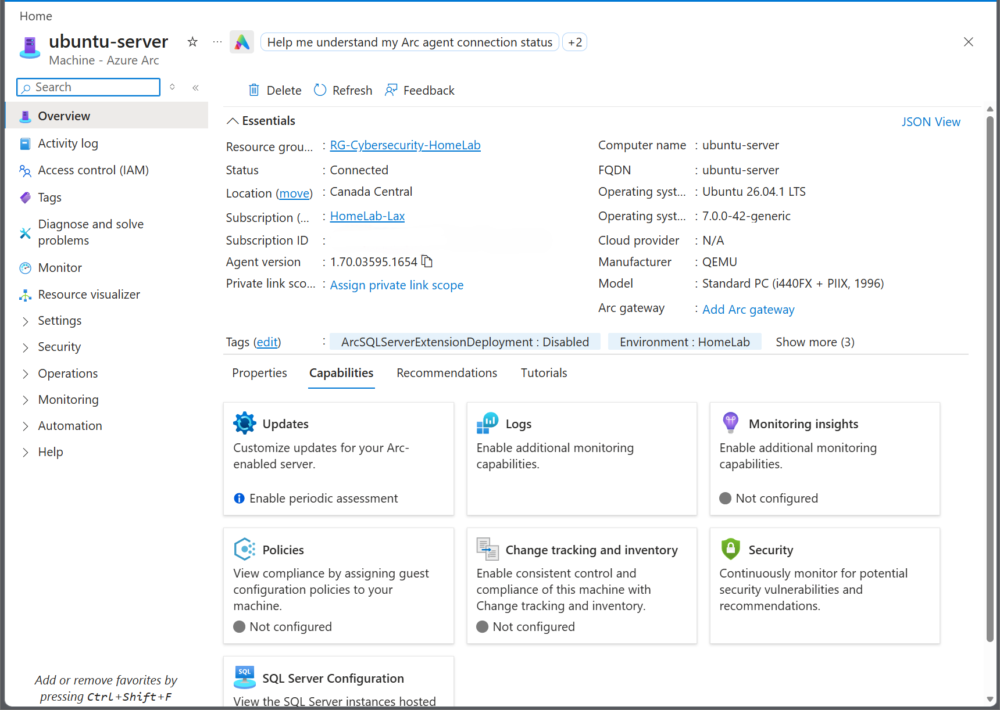

Azure Arc Hybrid Management
Connected an on-premises Ubuntu Server running on Proxmox VE to Microsoft Azure using Azure Arc. This project demonstrates hybrid-cloud onboarding, endpoint management, connectivity troubleshooting, and integration with an existing cybersecurity home lab.
Project Objective
Establish centralized Azure visibility for a Linux virtual machine hosted outside Microsoft Azure, while preserving existing Wazuh security monitoring and Ansible automation capabilities.
Deployment Summary
Technology Stack
- Microsoft Azure Arc
- Microsoft Azure Portal
- Proxmox VE virtualization
- Ubuntu Server 26.04.1 LTS
- Linux Bash and systemd
- Wazuh SIEM/XDR
- Ansible Core 2.20.1
- pfSense network firewall
Deployment and Configuration
- Reviewed the existing Azure Arc resources and subscription.
- Verified Ubuntu CPU, memory, disk capacity, and operating system.
- Created a Proxmox recovery snapshot before installation.
- Downloaded and inspected the Microsoft-generated onboarding script.
- Verified access to Microsoft package repositories.
- Installed the Azure Connected Machine agent on Ubuntu.
- Validated Azure endpoint connectivity using the agent's diagnostic utility.
- Authenticated with Microsoft and registered the Ubuntu machine.
- Confirmed the Connected status in Azure Portal.
Technical Troubleshooting
The initial Azure Arc connectivity check reported a missing
location argument because the machine was not yet registered.
Running the check with
--location canadacentral
successfully verified access to the required Azure endpoints.
An older Azure Arc resource was also identified as offline. The new Proxmox-hosted Ubuntu machine was registered separately to avoid interfering with the earlier resource.
Deployment Evidence
The following screenshot verifies that the Ubuntu Server successfully connected to Microsoft Azure Arc.

Post-Deployment Validation
- Azure Arc machine status: Connected
- Azure Arc dependent services: Active
- Wazuh Agent service: Active
- Ansible Core 2.20.1: Verified
- Ansible localhost ping: Successful
Post-installation checks confirmed that Wazuh remained operational and Ansible successfully executed its localhost connectivity test.
Skills Demonstrated
- Hybrid-cloud infrastructure integration
- Azure Arc onboarding and agent administration
- Linux server administration
- Network connectivity diagnostics
- Virtualization and snapshot management
- Security monitoring service validation
- Ansible automation verification
- Technical documentation and evidence collection